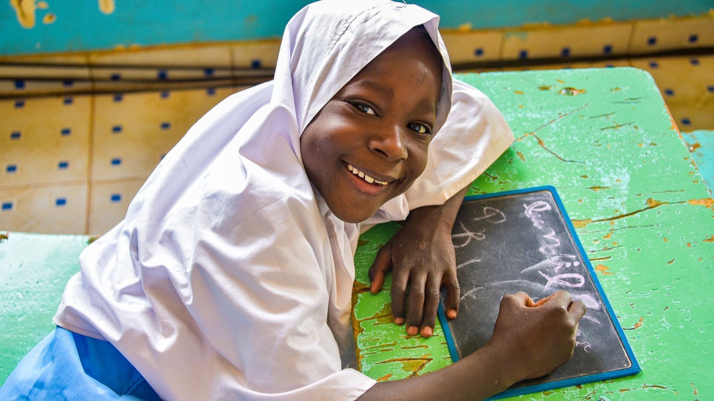
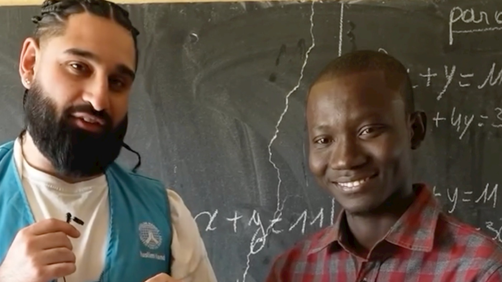
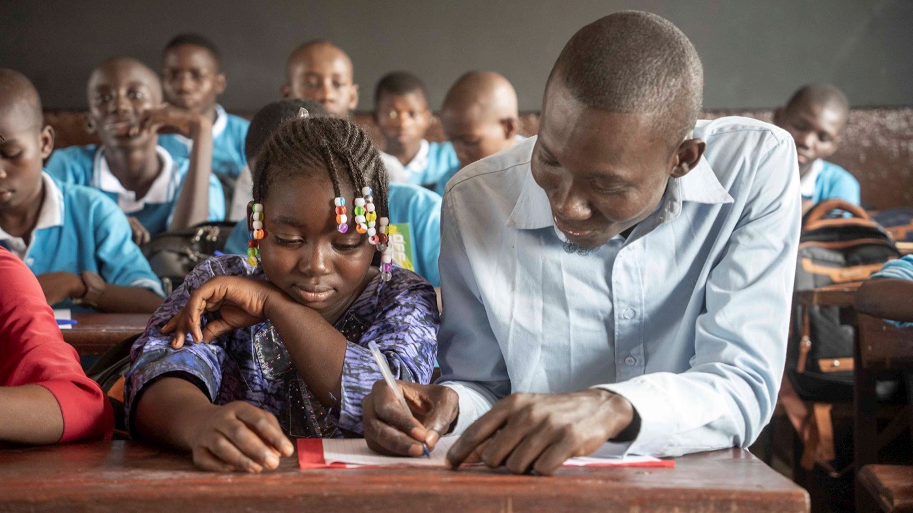

- Un repas chaud et un suivi médical chaque jour de classe
- Bus et vélos pour que les filles ne quittent pas l'école
- 39 € par mois vous coûtent 13,26 € après réduction d'impôt
Près d'un enfant sur cinq n'est pas scolarisé
La pauvreté, les conflits et l'isolement privent des millions d'enfants d'école. Dans les zones rurales d'Afrique et d'Asie, ne pas y aller condamne à répéter la précarité des parents.
Pour un enfant vulnérable ou orphelin, l'école n'est pas qu'une affaire de cahiers et de crayons. C'est un refuge, la garantie d'un repas chaud par jour, d'être soigné et de se déplacer en sécurité. Sans structure adaptée, l'abandon scolaire, le travail précoce et le mariage précoce guettent, les filles en premier.
Face à cette urgence, Muslim Hands France finance les Écoles de l'Excellence : pas seulement des murs, mais un écosystème éducatif complet et gratuit, avec le même niveau d'exigence qu'une bonne école de n'importe quel pays.

Bien plus qu'une salle de classe
Une École de l'Excellence réunit six briques indissociables. Retirez-en une, et l'enfant décroche.
Construction et équipement
Des bâtiments adaptés à chaque territoire, équipés pour apprendre dans de bonnes conditions.
Parrainage et accompagnement
Un lien direct avec un parrain pour assurer la scolarité des enfants orphelins ou très vulnérables.
Cantine et nutrition
Un repas chaud chaque jour : on n'apprend pas le ventre vide.
Santé et soins
Une infirmerie sur place : consultations, suivi dentaire et ophtalmologique.
Transport sécurisé
Bus et vélos pour un trajet sûr entre la maison et l'école.
Culture, numérique et sport
Salle informatique, bibliothèque et terrain de jeu pour ouvrir d'autres horizons.
Une main tendue vers un enfant
Une grande partie des élèves de nos Écoles de l'Excellence sont orphelins ou issus de familles très vulnérables. Sans soutien, beaucoup n'auraient jamais franchi la porte d'une salle de classe.
Grâce à votre parrainage, un enfant reçoit sa scolarité, sa cantine et son suivi médical. Et surtout, il sait qu'une personne, quelque part, veille sur son avenir. Mamady, parrainé à huit ans à Ségou, enseigne aujourd'hui dans l'école qui l'a accueilli.

Apprendre sans avoir faim ni mal
Un enfant qui a faim ou qui souffre n'apprend pas. Dans nos écoles, un repas chaud à midi et un dispensaire sur place transforment chaque journée de classe : les absences chutent, les résultats montent.
Avec 39 €, vous offrez un mois de cantine à un enfant. Avec un soutien régulier, les infirmeries assurent consultations, suivi dentaire et ophtalmologique toute l'année.

Contre l'abandon, un bus et des vélos
Au Mali, au Niger, au Sri Lanka ou au Sénégal, des kilomètres à pied sur des routes dangereuses poussent chaque année des enfants, surtout des filles, à quitter l'école.
Grâce aux bus et aux vélos financés par vos dons, le trajet devient sûr et l'assiduité, une évidence. À Sokonafing, au Mali, vos dons financent aussi la salle informatique, la bibliothèque et le terrain de sport de l'école.

De l'étude du village à la première rentrée
Choix du site
Avec les familles et les autorités locales, là où aucune école n'existe à distance de marche raisonnable.
Construction et équipement
Par des entreprises locales : classes, cantine, infirmerie, point d'eau et sanitaires.
Recrutement
Enseignants qualifiés, cuisinières et soignant, employés localement et formés par le réseau.
Suivi dans la durée
Rapport annuel aux donateurs, visites de nos équipes, bourses pour poursuivre au collège.
Choisir ce que finance votre don
Chaque montant correspond à une action précise, et le reçu fiscal réduit votre coût réel de 66 %.

Questions fréquentes sur les Écoles de l'Excellence
Qu'est-ce qu'une École de l'Excellence ?
Une école gratuite construite et gérée par le réseau Muslim Hands, qui réunit sous un même toit la classe, une cantine, une infirmerie et un transport sécurisé, pour des enfants orphelins ou issus de familles très pauvres.
Où se trouvent les Écoles de l'Excellence ?
Le réseau Muslim Hands soutient 130 écoles dans 18 pays. Muslim Hands France finance en priorité celles du Mali, du Niger, du Sénégal et du Sri Lanka.
Combien coûte un mois de cantine ?
39 € offrent un mois de repas chauds à un enfant. Le même montant mensuel permet de parrainer un élève : scolarité, cantine et suivi médical compris.
Mon don est-il déductible des impôts ?
Oui, à 66 % : 39 € vous coûtent 13,26 € après réduction d'impôt. Le reçu fiscal est envoyé immédiatement par e-mail.
Puis-je financer une classe entière ?
Oui, dans le cadre de la Grande générosité : une classe, une bibliothèque ou une salle informatique à votre nom ou au nom de votre entreprise, avec un rapport dédié. Écrivez à contact@muslimhands.fr.
Offrir l'école à un enfant
39 € vous coûtent 13,26 € après réduction d'impôt de 66 %.
Donner au fonds éducationReçu fiscal immédiat · don mensuel possible · rapport annuel

Un cartable, une place à table, un avenir.
Chaque enfant scolarisé dans une École de l'Excellence mange, est soigné et rentre chez lui en sécurité. C'est tout cela, une école.